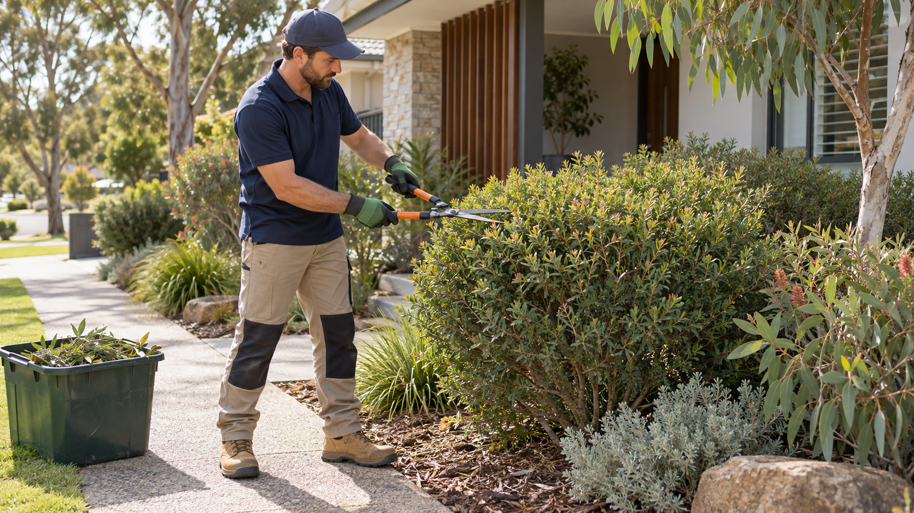

Property and scope
Site dimensions, sun, soil and drainage observations
Grounds and garden care
Garden landscaping covers planned changes to planting, beds, edging and outdoor layout rather than routine mowing alone.
Describe this request
What we can coordinate
Garden landscaping covers planned changes to planting, beds, edging and outdoor layout rather than routine mowing alone.
Public price reference
A published Perth or WA market reference for the scope described below.
A$8,000–$20,000per typical 60–100 m² Perth front-garden landscape project
Project range, not an hourly rate. Design, reticulation, drainage, paving, plant size and access materially change the quote.
Prices shown are Ellis official guide prices. Contact Ellis for a tailored consultation.
What to tell us
Site dimensions, sun, soil and drainage observations
Photos and the preferred style or maintenance level
Plants or materials to retain, access and water availability
Perth metropolitan service area
Ellis reviews requests for garden landscapers within the Perth metropolitan area. Coverage still depends on the suburb, postcode, scope, timing and an appropriate provider.
Start with one request
Share the task and Perth location. Ellis will confirm the appropriate next step and who would attend.